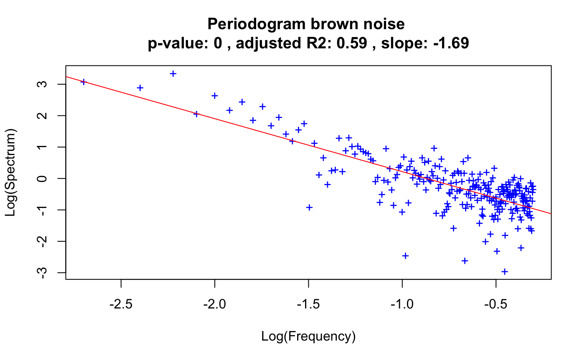

The periodogram plots frequencies (f) versus their power (spectrum). In case their relationship is well described by a line in log scale, its slope can be used to determine the noise type of a time series. If the slope is around -1, the time series displays 1/f (pink) noise. If it is around -2, the time series displays 1/f^2 (brown) noise. If the slope is even steeper, the time series displays black noise.
powerspec(v, plot = FALSE, detrend = TRUE, smooth = FALSE, df = max(2, log10(length(v))), groups = c(), header = "", col = "blue")
| v | time series vector |
|---|---|
| plot | plot the periodogram with the power law in log-scale |
| detrend | remove a linear trend prior to the computation of the periodogram |
| smooth | fit a cubic spline with smooth.spline and report the slope as the minimum of the derivative; in this case, the goodness of fit of a line to the frequency versus spectral density power law is not reported |
| df | smooth.spline parameter (degrees of freedom) |
| groups | vector of group assignments with the same length as v, if non-empty computes frequencies and spectral densities for each group separately and computes noise type on pooled frequencies and spectral densities |
| header | header string |
| col | color used in periodogram if plot is true |
return the slope, p-value, adjusted R2, log frequencies and log spectra
The function uses stats::spectrum to compute the periodogram. It also reports the significance and goodness of fit of the power law.
brownNoise=cumsum(rnorm(500,mean=10)) out.spec=powerspec(brownNoise, header="brown noise", plot=TRUE)